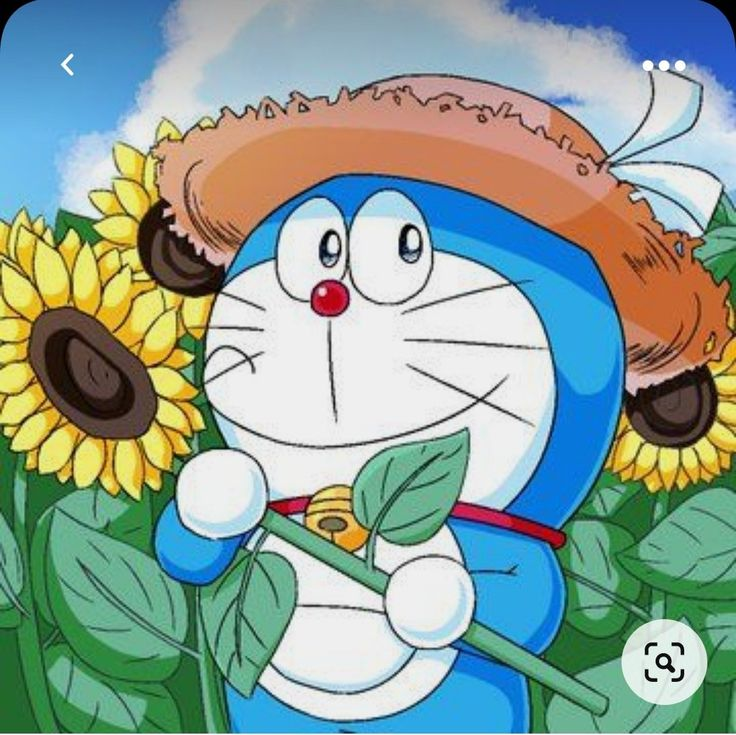
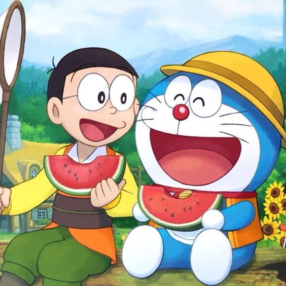
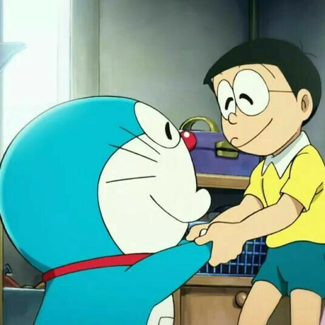
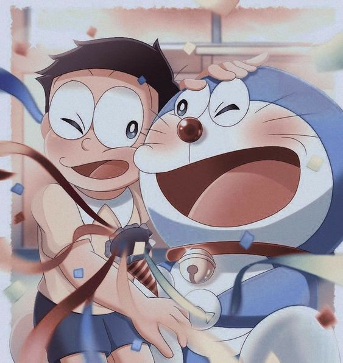

Doraemon es un gato robot cósmico que viene del futuro, es amigo de Novita, un niño muy despistado y algo torpe, al cual ayudara con sus grandiosos inventos futuristas los cuales saca de su bolsillo mágico, de este modo tratara de evitar los problemas que él ha provocado en el futuro.
   Doraemon es un gato robot blanco y amarillo, y tiene orejas, pero tras el ataque de unos ratones robots, se queda sin orejas (de allí su fobia a los ratones). Tiempo después de este incidente, el gato cósmico llora sin parar durante tres días y tres noches
Eso le cambia la voz, que se vuelve aguda, y hace saltar la pintura amarilla de su cuerpo metálico, revelando el bonito color azul que le caracteriza.
Sin embargo, no le gusta este aspecto físico porque mucha gente que no lo conoce lo compara con un mapache, por sus grandes ojos y su cara redonda.
El nombre de Doraemon proviene de la unión del nombre de unos pasteles típicos japoneses, los dorayakis (las golosinas favoritas de Doraemon) y el sufijo emon.